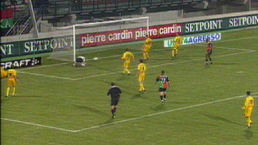

|
NEC
- Roda JC (1-1) 27 november 2004
|
De trainers van beide clubs staan onder druk.
Umberto Tan komt in Studio Sport terug op de forumavond van Roda JC.
Filipovic verzendt een hoge bal naar Cristiano.
Deze kopt de bal uiterst rechts in: 0-1 (8').
Cristiano vliegt net als verleden seizoen door de Goffert.
Boutahar schiet op de paal.

De bal stuit terug en kan door Kujovic gepakt worden. Roda komt met de
schrik vrij.
Cristiano verprutst een enorme kans.
Kone idem dito.
Weer een enorme kans voor Kone, maar deze schiet recht op Gentenaar.
Mooie kans voor Bodor, maar hij wil de bal naar Cristiano passen. Dat lukt
niet vanwege een onderschepping door Wisgerhof.
Boutahar wordt door Bodor opzij gezet. Het levert NEC een penalty op.
Kujovic stopt de strafschop van Boutahar.
Uit een scrimmage scoort Wisgerhof de gelijkmaker: 1-1 (68').
Zou Bodor op judo zitten? Moeiteloos lanceert hij reus Nalbantoglu.
Deze grijpt Bodor vervolgens stevig in de bilnaad :-)))
Deze actie leidt tot een opstootje.
Roda krijgt nog enkele uitstekende kansen via Cristiano en Filipovic maar
het blijft 1-1, het vierde gelijkspel op rij in de competitie....
© Koempels Pleasure Dome
|